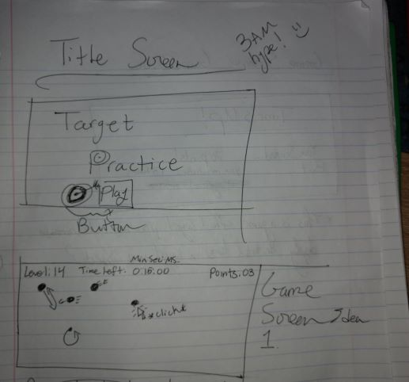
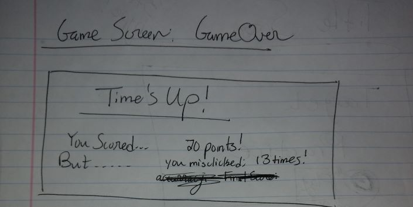

GAME CONCEPT: The game is a simplistic but challenging one; the goal is to click on the circles that appear in the game field each successful click rewarding a point to the player. This will be a task that grows more challenging as you progress by means of a timer, the targets moving after a certain point, and a steadily increasing number of circles. The goal is to get as many points as possible by the end of the run, that being when the player runs out of time.
GENRE: Arcade style game
PLATFORM: Desktop only (requires a mouse)
STORY: This game is purely abstract
AESTHETICS: Aiming for a simple geometric/pixelated point and click game with small chipper sound effects and simple but pleasing visuals
MOCKUPS:
 ABOUT THE DEV: I am a second year Game Design and Development student at RIT, also seeking a minor in Digital Literature and Comparative Media. My skillsets are developing as we speak and include HTML, CSS, JavaScript, C#, and a number of Editing platforms like Photoshop. Interests of mine include Dungeons and Dragons, where I run a home made game with my closest friends (This game really brings out my most creative side).